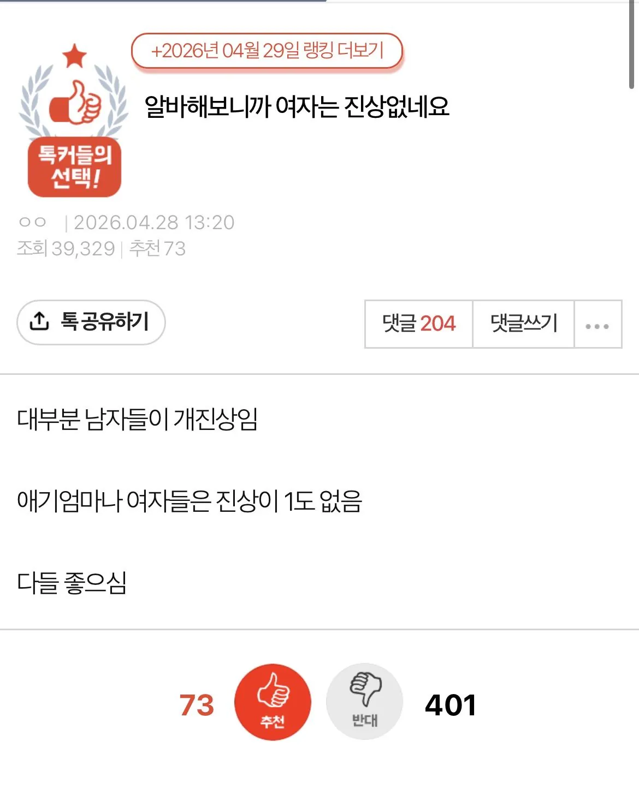
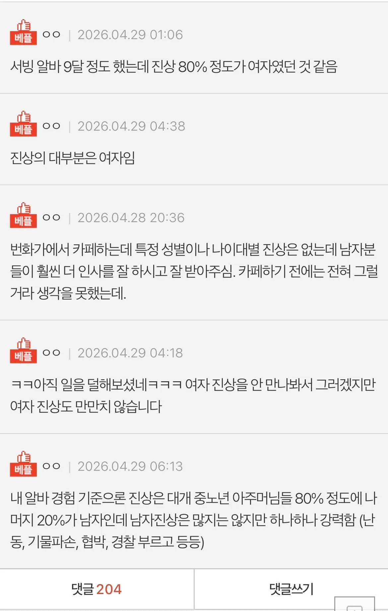

여초에서도 욕먹음


여초에서도 욕먹음
남자들은 물건이 목적이지 스트레스 풀이는 다른 수단 고를 경우가 많고
사람 괴롭혀야 스트레스 풀리는 특정 남자들이 굳이 서비스업 건드리는거지.
내 기준으로 물건만 빨리빨리 나오면 감사드리고 빨리 먹고싶음.
지기분상해죄로 사과하라는건 대부분 여자고 말도 안되는 개논리 펴면서 ㅈㄹ 떠는건 대부분 남자
진상이 없을 존나 예쁜 여자 기대하고 들어왔는데
퉷
진성여자진상 아직안만나봐서 저러나보네. 별거아닌걸로 해결해줄때까지 존내귀찮게구는데 보통 지가스스로하면 1초도안걸리는거 해달라고하는 해줘 충 졸라많고. 남자진상은 열폭충이라 자기맘대로대야지 안대면 열등감폭발하면서 폭력적이게변함.
남자진상은 거의 고정임.
인생 말아먹은 중노년. 보통 술 끼고 다님
or 여자 데리고 온 양아치
그게 아닌이상 거의없음
여자진상은 연령대와 상관없이 대체로 비슷함
주로 참교육에 나오는 그 진상엄마가 딱 스테레오타입인데
표독스럽고 나는 해도 되지만 너는 안돼가 스타일임
이에 반해 남자는 연령대에 따라 진상 차이가 있는데
늙은 남자는 주로 밑도끝도 없는 진상이고 남이 말하면 아예 안들음
그런데 의외로 억지로 맞춰주면서 대화 좀 하다보면 쉽게 풀릴 때도 가끔 있음
젊은 남자새끼들이 요새는 더 함
피해의식 덩어리 개찐따 새끼들이 지한테만 옳은 정의감에 빠져가지고
억울억울열매를 갈아드신건지 허구헌날 지만 억울하다그러고
밑도끝도없이 다 해달라 그럼
내가 볼땐 경계선지능인데 지가 똑똑한 줄 알고 헛소리만 주둥이로 털어대는게 존나 웃김
요새 학폭이 없어져서 그런거 같음
알바를 군대에서 하셨나
나는..커플진상이 제일 힘들더라...
'알바해보니까' 어쩌구 하지 글만 싸지 말고 실제로 나와서 뭐라도 해 좀...
그런 모순을 견디는 것이...
조온나 시끄럽고 더럽게 쓰는 진상 : 10대 , 조온나 시끄러운 진상 : 20대 초반 여성크루 , 그냥 봐도 진상 : 50대 이상의 아주머니들 , 더럽게 쓰거나 시끄러운건 아닌데 카운터에 자꾸 말거는 진상 : 70대 이상의 할아버지들 , 말 ㅈ같이 하는 진상 : 3040 남자들
요즘 여초도 보면 진짜 되도않는 소리는 절대 공감 안해주는거 같음 ㅋㅋㅋㅋ
경험상 노친네들> 아주마이> 아재 >젊은 여자 순이였음 ㅅㅂ
ㅇㄱㄹㅇ 근데 아주마이>>>>>>>아재임
충성클럽 알바였고요
난 알바했을때 중학생 남자랑 20대 초반 꼬추새끼들이 ㅈㄹ 강도가 존나쌨고
진짜 그만두고싶게 지랄한 진상들은 30~40대 아줌마 할배새끼들이였음
남자도 좀 무시당했다고 생각하면 지랄지랄하는성격 있긴한데 카페에서 발현되기엔 접촉이 그닥없는 업종이지
인사만하고 음료나왔습니다만하면되는거라
알바만해봐도 노인+아줌마 혐오증걸리는데
근데 아주매들 뭔가 남자알바한테는 진상 안부리고 만만한 여자알바한테 더 진상부리는게 있는듯
비상식적인 요구를 하면 보통 여자들이고, 말이 하나도 안통하면 보통 남자들임 둘 다인 경우도 있음 ㅜㅜ
자영업 9년차.. 진상에는 남녀가 따로 없다.
맞아...남녀가 뭔 차이가 있어
그냥 인간차이지ㅋㅋㅋㅋㅋ....
성별에따른 행동패던은 있어도 결과적으로는 정신, 육체적으로 스트레스 주는건 매한가지
남자진상 별로 없다가 술먹으면 많아짐
피씨방에서 일 했나
그게 아니라 그냥 남자를 싫어하고싶은거야
(왜 나를 사랑해주지 않는건데 그럼 나도 싫어!!!!!! 란 마인드)
흐린눈도 작작해야지 지능이 아예 없냐ㅋㅋ
남자만 오는 가게에서 일하는 거겠지
웃음이나 노래같은걸 파는 가게
거긴 많음
ㅋㅋ 아줌마들이 없는 세상에 사는갑네
서비스직에서 기피대상이 30-40대-아줌마임 여혐이 아니라 걍 여자직원들도 혀를 내두름 혐오가 아니라 데이터임
남자진상 늙다리나 소심해서 피해의식 있음 걍 대충 맞춰서 응대하면 돈내고 가고 다음날 또옴
여자진상 마찬가지로 자존감 바닥인데 아무문제없어도 뭐하나 더줄까 싶어서 갑질+컴플레인 오지게 하면서 이거 어떻게 해결할거냐고함 결국 물건 이상없는데 뭐 꽁짜로 더 달라고 괜히 일만드는 스타일임
여자진상은 진짜 말이 좃나 안통하고 남자진상은 걍 죽여버리고싶음
서비스직 해봤지만 여자 진상 70프로 뭔가 꼼꼼하게 따지는 척 하는거 ㅈ같음 마치 지가 메뉴얼 다아는거 마냥 ㅈㄹ
진상은 남녀노소를 가리지 않음
2030도 마찬가지고 그냥 세대마다 일정 비율이 진상이라고 생각함
창녀라 남자만 있는갑지
여자가 진상이 될 수 없는 직종에 있나?
대체 직업이 뭐길래 ㅋㅋㅋㅋ
여자진상들은 자존심 상하면 버럭하더라도 지 화 풀리면 끝남
남자진상들은 자존심 한번이라도 상하면 진짜 죽을때까지 괴롭힌다는 느낌임
ㄹㅇ 여자진상은 많은데 고점은 남자진상이 높음 특히 할배